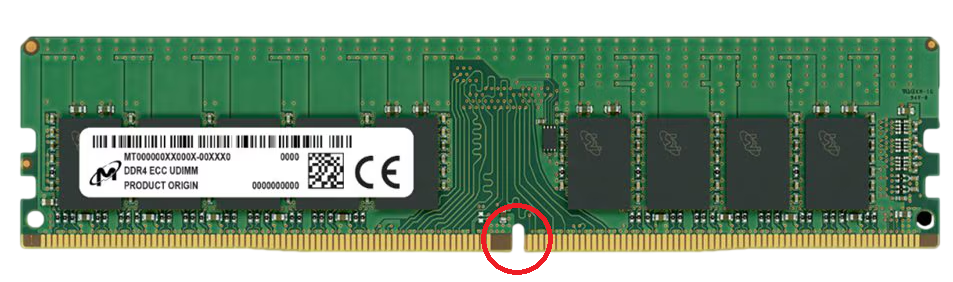

La memoria RAM DDR4 se lanzó al mercado en el año 2014 después de 7 largos años de espera desde la tercera generación y ahora es una de las RAM más extendidas.
La memoria RAM DDR4 que significa Double Data Rate type 4 lo que en español quiere decir (Doble Velocidad de datos tipo 4) es la cuarta generación de memorias RAM
Funciona como almacén temporal ultrarrápido para datos, para transferir información en ambos flancos de la señal del reloj con ello duplicando la velocidad, y procesar varias solicitudes simultáneamente resultando en un mayor ancho de banda y mayor capacidad.
- Velocidad: Su medida es en MT/s que significa "Mega Transfers por segundo " o MHz, en esta generación su velocidad de datos esta entre 2133 MT/s o más , lo que equivale a 2133 MHz pudiendo superar los 3200 MHz con ello pudiendo proporcionar tasas de transferencia de datos mucho más altas.
- Compatibilidad: Las ranuras de la memoria DDR4 son físicas y eléctricamente incompatibles con otras generaciones, caracteristicamente para poder identificar de que tipo es una memoria se observa la posición de su hendidura.
- Voltaje: Esta Memoria DDR4 opera con un voltaje de 1.05V hasta 1.2V aunque muchos operan a 1.35V lo cual es un voltaje más bajo que la anterior generacion DDR3 y a medida que van sacando más generaciones su voltaje se va reduciendo.
- Capacidad: La capacidad que este módulo tiene va desde 32 GB (Gigabyte) por módulo que se va ampliando poco a poco.
- Cantidad de pines: 288 pines
- Datos importante: Al cambiar una memoria RAM es fundamental verificar siempre que su módulo en este caso que la Memoria DDR4, sea compatible con la placa base para evitar problemas. Lo cual es fácil de identificar por que la Memoria RAM tiene una hendidura caracteristica de cada generación. La hendidura de esta generacion se encuentra ubicada en la parte inferior y esta menos desplazada a la derecha casi cerca de la mitad, mirando la memoria de frente además podemos identificarla porque tiene más memorias y tiene una cresta en la zona central.
La memoria SO-DIM que significa Small Outline Dual In-Line Memory Module que su significado en español es (Módulo de Memoria en Línea Doble de Esquema Pequeño)
Esta es una versión compacta de los módulos de memoria RAM (DIMM) utilizada principalmente en laptos modernas, Mini PC, Ultrabooks que tienen un espacio limitado por su tamaño pequeño.
Las dimensiones de la memoria SO-DIMM DDR4 son:

- Largo: Aproximadamente 67.6 milimetros
- Alto: Aproximadamente 30 milimetros
- Cantidad de Pines: 256 pines
Estuvo presente aproximadamente en el año 2014 y se empezó a utilizar de forma masiva en el año 2015 y era utilizado por laptops con procesadores Intel Pentium y Celeron Modernas, Intel Core i3,i5 i7 de sexta a décima generación entre otros más.